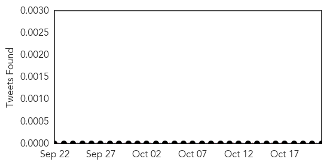

30 Day Trends
Web: 0 alerts, 0 warnings
Twitter: 0 alerts, 0 warnings
Top Articles:
- 0.968
- Scoop InfoPages
- 0.945
- 21st measles case of year found in Nantou
- 0.861
- Flexibility in disease outbreak management could save lives and money
- 0.860
- In disease outbreak management, flexibility can save lives and money
- 0.839
- Measles outbreak on Jetstar flight
- 0.837
- Flexibility in disease outbreak management could save lives and money
- 0.835
- Disease outbreak management -- flexibility can save lives and money
- 0.813
- Measles cluster at a university in the United Kingdom
- 0.811
- Flexibility in disease outbreak management could save lives and money
Top Tweets:
-
No tweets found for Oct 21, 2014
Web/News Articles

Tweets
Article Locations